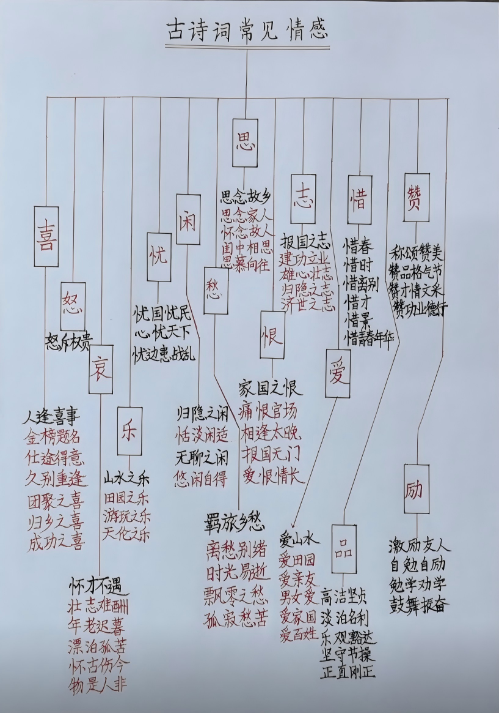

一线高中语文教师 · 师生共用公益资源站
在清亮书卷气里，遇见更有朝气的语文。
这里整理作文素材、文言文、诗词鉴赏、现代文阅读、名著导读与备课资料。风格轻盈，内容扎实，适合老师备课，也适合同学们用手机日常查阅、摘抄与复习。
清风翻书页，少年正读诗。浅墨、校园、竹影与作文素材共同构成一个耐看的学习角落。

本周作文金句
个人理想汇入国家需要，生命才抵达更辽阔的高度。
核心入口
将资料按使用场景重新收束：语文基础资料、作文素材、每周素材卡片、备课资源与站点说明。
最新更新
自动读取已发布资料，展示最近更新的 6 篇内容。
最近浏览
保存在当前浏览器中，方便继续阅读。